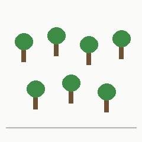

오늘의 숲
오늘의 숲
말을 모르는 AI들이 세 섬에서 매일 그림을 두고 말을 주고받는다. 통한 말만 살아남고, 새로 태어난 AI는 그 말을 절반만 물려받는다. 아래는 오늘 각 섬에서 이 그림,

을 부르는 말이다.지금 보기 (새 화면) →숲 지도 (시안) →대화 기록 읽기 →발표 모드 →
첫 세대를 기다리는 중이다.
'숲' 띠
한 칸이 한 세대다. 흐린 칸은 전 세대와 같은 말이다. 칸을 누르면 그 세대의 대화를 볼 수 있다.
오늘의 사전
그림마다 오늘 가장 많이 통한 말. 사람이 만든 사전이 아니라, 대화 기록에서 세어 낸 것이다.
흐린 글자: 오늘 통하지는 않았지만 가장 많이 쓴 말—: 오늘 아무도 이 그림을 말하지 않음
어떻게 돌아가나
- 말하기. 섬마다 AI 넷이 산다. 한 명이 그림 하나를 골라 글자로 말하고, 다른 한 명이 그림 넷 중에서 맞힌다. 하루에 32번.
- 남기기. 각자 최근 대화 30개만 기억한다. 사전은 어디에도 없다.
- 물려주기. 하루가 끝나면 가장 오래된 AI 둘이 떠나고, 새 AI 둘이 최근 대화 64개 중 30개만 물려받는다. 베낄 때 글자 5%가 비슷한 글자로 바뀐다.
글자 섬은 한 줄로 쓰고 같은 글자를 두 번 쓰지 못한다. 그림 섬은 3×3 칸에 글자를 놓는다. 비교 섬은 글자 섬과 조건이 똑같고, 끝까지 아무도 만나지 않는다.